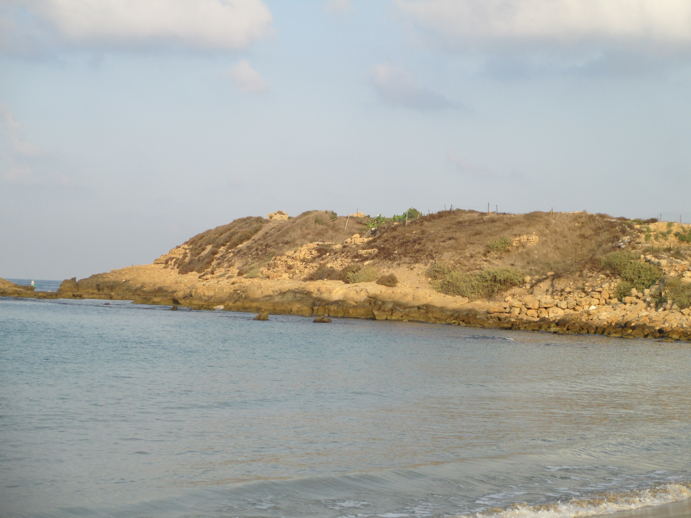

Tel Dor

- Find Name
- Tel Dor
- Description
- The ancient Phoenician port city of Dor, on the only natural harbour on the Levantine coast south of the Ladder of Tyre, occupied from the Bronze Age into the Roman period. Excavations under Ephraim Stern (1980-2000, twenty seasons) exposed a four-chambered eastern gate of the Israelite and Hellenistic city, fortifications, a Hellenistic aqueduct, temples, and a harbour whose lagoon has yielded Iron Age ship cargoes (11th, late 9th-early 8th, and late 7th-early 6th centuries BC) showing trade with Egypt, Cyprus and the Phoenician coast. Dor kept a strongly Phoenician character even under Israelite, Assyrian, Babylonian, Persian and Hellenistic rule.
- Historical Period
- Bronze Age–Roman
- Evidence Class
- Contextual
- Interpretations
- The identification of Tel Dor with biblical Dor is secure. Debate concerns the political reading of the finds: whether the narrowing of Dor's trade partners in the late 9th-early 8th centuries BC reflects Israelite rule replacing Phoenician networks, as the 2025 harbour-cargo study argues, or other causes. The 'king of Dor' in Joshua 11-12 is the Canaanite city, not a later phase.
- Alternative Names
- Dor; Dora; Khirbet el-Burj
- Related Places
- Related Books
- Related People
- Scripture Illuminated
- Biblical Significance
- Dor is the port Israel never fully took: allotted to Manasseh but unconquered (Judges 1:27), then a district capital under Solomon (1 Kings 4:11) while remaining culturally Phoenician. Its gate, harbour and cargoes give that half-conquest a material shape — Israel ruling a sea-trading city whose ships, jars and gods stayed Phoenician.
- Artifact Date
- c. 2nd millennium BC - 3rd century AD (port city; Iron Age remains central)
- Current Location
- In situ, Tel Dor and Mizgaga Museum, Israel
- Date Discovered
- 1980-2000 (twenty seasons, Ephraim Stern; work continues)
- Discovery Location
- Tel Dor, Carmel coast, Israel
- Timeline Era
- Divided Monarchy
Awaiting Review Not yet checked against scholarly sources. Treat its claims as provisional until this entry is reviewed. About verification
Last reviewed: not yet reviewed